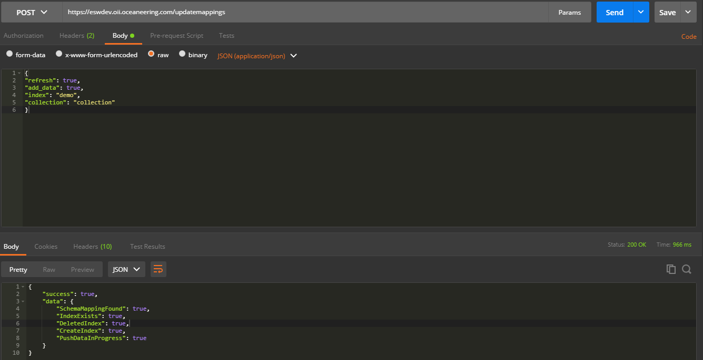
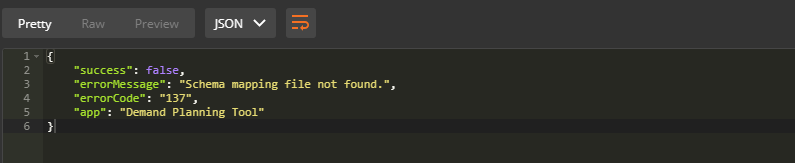

The update mappings API provides the users/developers to define mappings and settings for a index on
elasticsearch to save data in the preffered pattern.
Elasticsearch will automatically create an index (reading settings and
mappings from configuration file) for you if you're using this API.
To use Update Mappings API, an access_token and followings are the must have resources
updatemappings to
initiate
the update mappings call.Update Index Mappings using REST client i;e POSTMAN. The endpoint to use for this would be
updatemappings. Once the mapping call initiated, it will read mapping
configurations from the application.json file. It will create new index, adds data into it from MongoDB and
starts the live syncing (if live parameter provided) between MongoDB and Elasticsearch.

Request Sample
Response Sample
All the error are handled which occured at the point of revoking token. The error code will be in JSON format and is user understandable.

Sample